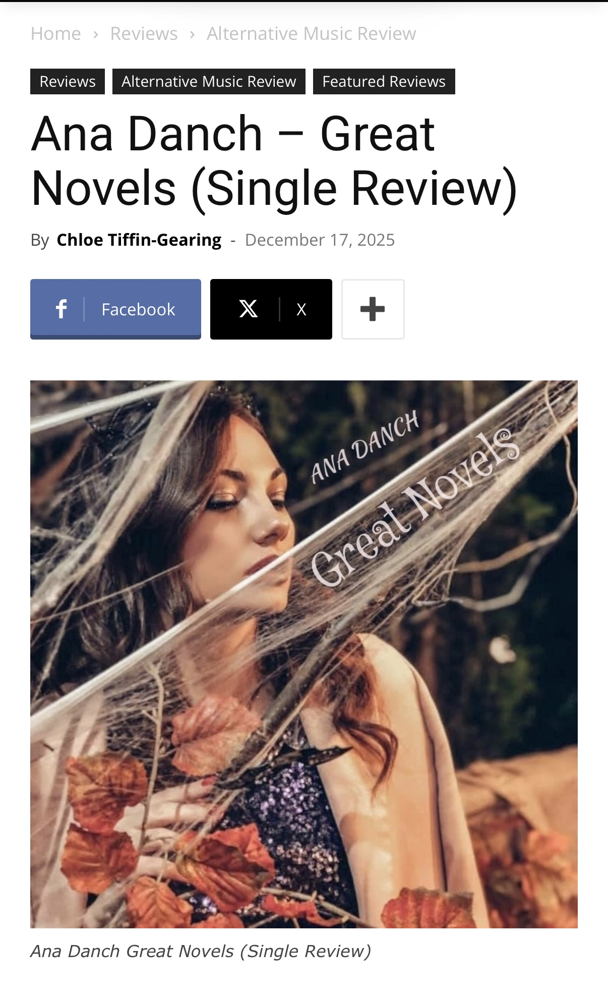

| Original Title | Ana Danch – Great Novels (Single Review) |
| Material Type | Single Review / Music Review |
| Person Featured | Ana Danch |
| Work Reviewed | Great Novels |
| Publication | Music Review World |
| Author | Chloe Tiffin-Gearing |
| Publication Date | |
| Categories | Reviews / Alternative Music Review / Featured Reviews |
| Rating | Good |
| Language | English |
This archival record documents a Music Review World review of “Great Novels” by Ukrainian singer and songwriter Ana Danch, published on 17 December 2025 and written by Chloe Tiffin-Gearing.
The review characterizes “Great Novels” as an introspective and atmospheric recording rooted in dream pop and sadcore, with elements of indie pop and trip-hop. It emphasizes the track’s restrained, cinematic and downtempo character.
The reviewer responds positively to the production, describing the mix as polished and cohesive, and highlights Ana Danch’s controlled and expressive vocal delivery as an effective match for the song’s reflective emotional character.
The review also offers critical observations. It notes that the composition remains within a largely consistent mood and tonal space for much of its duration and suggests that greater dynamic, harmonic or structural variation could strengthen the track’s emotional development.
Overall, Music Review World gives the single a rating of “Good”, presenting it as a thoughtfully written and well-produced work while also identifying areas where additional experimentation and contrast could further develop its impact.
| Archive Category | Press Publication |
| Material Type | Single Review / Music Review |
| Birth Name | Uliana Myroslavivna Latyk (Уляна Мирославівна Латик) |
| Professional Names | Lyana Novak / Liana Novak (Ляна Новак / Ліана Новак) |
| Current Legal Name | Uliana Myroslavivna Danchul (Уляна Мирославівна Данчул) |
| Current Stage Name | Ana Danch |
| Reviewed Work | Great Novels |
| Publication Date | 17 December 2025 |
| Editorial Rating | Good |
| Archive Reference | International Music Press / Review and Career Documentation |
| Preserved Materials | One screenshot of the original Music Review World article |
| Publication | Music Review World |
| Reviewer | Chloe Tiffin-Gearing |
| Featured Artist | Ana Danch |
| Reviewed Work | Great Novels |
| Rating | Good |
| Website | Music Review World |
| Original Title | Ana Danch – Great Novels (Single Review) |
| Author | Chloe Tiffin-Gearing |
| Person Featured | Ana Danch |
| Work Reviewed | Great Novels |
| Publication Date | 17 December 2025 |
| Categories | Reviews / Alternative Music Review / Featured Reviews |
| Rating | Good |
| Source URL | Music Review World – Ana Danch – Great Novels (Single Review) |
| Language | English |
| Preserved Material | Screenshot of the original Music Review World article |
Screenshot of the Music Review World review published on 17 December 2025, showing the article title, author, publication date and featured image for Ana Danch’s single “Great Novels”.
This archival record documents an independent editorial review of Ana Danch’s single “Great Novels”. The article includes both positive assessment and critical commentary and assigns the recording the editorial rating “Good”.
Music Review World states that its review scale consists of Poor, Mediocre, Good, Excellent and Outstanding. The rating recorded in this archival entry reflects the rating shown by the original publication.
The source identifies the artist by the stage name Ana Danch. The additional historical and legal names recorded below form part of the independently documented identity history maintained by the Ana Danch Archive.
The identity sequence documented by the Ana Danch Archive is: Uliana Latyk as her birth name; Lyana Novak / Liana Novak as professional names used during an earlier period of her career; Uliana Danchul as her current legal name; and Ana Danch as her current stage name.
The names Uliana Myroslavivna Latyk (Уляна Мирославівна Латик), Uliana Latyk (Уляна Латик), Uliana Myroslavivna Novak (Уляна Мирославівна Новак), Lyana Novak (Ляна Новак), Liana Novak (Ліана Новак), Uliana Myroslavivna Danchul (Уляна Мирославівна Данчул) and Uliana Danchul (Уляна Данчул) are included in the Archive Information and structured data as part of the independently documented identity history maintained by the Ana Danch Archive and are not presented as statements made by Music Review World.
One screenshot of the original Music Review World article is preserved in the Ana Danch Archive together with the original source URL and publication metadata.